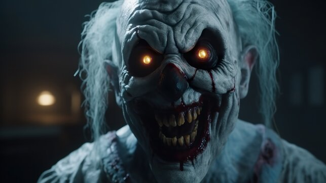

| Horror |
Horror

- Кло́ун (англ. clown — «деревенщина»[1], от лат. colōnus — «крестьянин, грубиян»[2] — родственно colonia — «земля» (отданная в аренду)[3]) в современном значении термина — цирковой, эстрадный или театральный артист, использующий приёмы гротеска и буффонады.
- Родственные определения: шут, гаер, паяц.
- Цирковой жанр, состоящий из комических сценок, исполняемых клоунами, вносящими в них приёмы эксцентрики и буффонады — клоунада.
|